<div class="initial-content">
  <div id="main" role="main">

  <article class="page has-sidebar" itemscope itemtype="https://schema.org/CreativeWork">
    <meta itemprop="headline" content="Governance">
    
    <meta itemprop="datePublished" content="2021-12-09T20:00:00+00:00">
    


    <header>
      <h1 id="page-title" class="page__title" itemprop="headline">Governance
</h1>
      


    </header>

    <section class="page__content" itemprop="text">
      

        <picture class="aligncenter">
                <source srcset="assets/landing-zone.png 1x" />
                
            </picture>

<h2 id="compartments">Compartments</h2>

<p>Something important to think about as you begin is how you will organize your tenants. Oracle Cloud Infrastructure offers a key feature in building up a virtual PC with a tenancy, and has introduced compartments to have a proper organizational structure so you can organize your infrastructure and use policies per compartments for a proper role and permission concept.</p>

<p>When you first start working with Oracle Cloud Infrastructure, you need to think carefully about how you want to use compartments to organize and isolate your cloud resources. Compartments are fundamental to that process. Most resources can be moved between compartments. However, it’s important to think through the compartment design for your organization up front, before implementing anything.</p>

<p>Compartments are tenancy-wide, across regions. When you create a compartment, it’s available in every region that your tenancy is subscribed to. You can get a cross-region view of your resources in a specific compartment with the tenancy explorer.</p>

<p>After creating a compartment, you need to write at least one policy for it, otherwise no one can access it (except administrators or users who have permissions set at the tenancy level). When creating a compartment inside another compartment (up to six-levels of sub-compartments are supported), the compartment inherits access permissions from compartments higher up its hierarchy.</p>

<p>When you create an access policy, you need to specify which compartment to attach it to. This controls who can later modify or delete the policy. Depending on how you’ve designed your compartment hierarchy, you might attach it to the tenancy, a parent, or to the specific compartment itself.</p>

<p>To place a new resource in a compartment, you simply specify that compartment when creating the resource (the compartment is one of the required pieces of information to create a resource). Keep in mind that most IAM resources reside in the tenancy (this includes users, groups, compartments, and any policies attached to the tenancy) and can’t be created in or managed from a specific compartment.</p>

<p>The structure of compartment varies in most cases by the organizational structure of the company. Well-established and large companies have, in many cases, centralized services like a security or a network compartment. Smaller and newer companies could have a leaner and less complex setup and are organized by projects without central entities which are responsible for certain elements in the infrastructure.</p>

<p>The flexibility and the features by OCI in using compartments to organize and isolate cloud resources gives you the ability to build up your organization, or a desired new setup of your tenancy to fulfill your requirement in the organization of your elements.</p>

<p>We are supporting both centralized and federated application DevOps models. Most common models are dedicated DevOps teams aligned with a single workload. In the case of smaller workloads or COTS or 3rd party application, a single AppDevOps team is responsible for workload operation. Independent of this model every DevOps team manages several workload staging environments (DEV, UAT, PROD) deployed to individual landing zones/subscriptions. Each landing zone has a set of RBAC permissions managed with OCI IAM provided by the Platform SecOps team.</p>

<p>When the base is handed over to the DevOps team, the team is end-to-end responsible for the workload. They can independently operate within the security guardrails provided by the platform team. If dependency on central teams or functions are discovered, it is highly recommended to review the process and eliminated as soon as possible to unblock DevOps teams.</p>

<p>A project-based setup:</p>

<picture class="">
                <source srcset="assets/OCI-central-mgmt-per_project.png 1x" />
                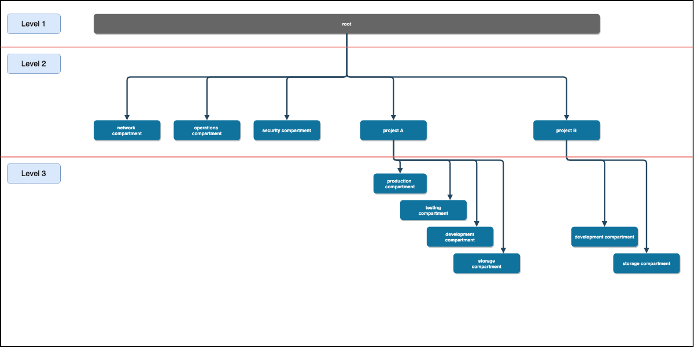
            </picture>

<p>A department-based setup:</p>

<picture class="">
                <source srcset="assets/OCI-central-mgmt-functional_compartments.png 1x" />
                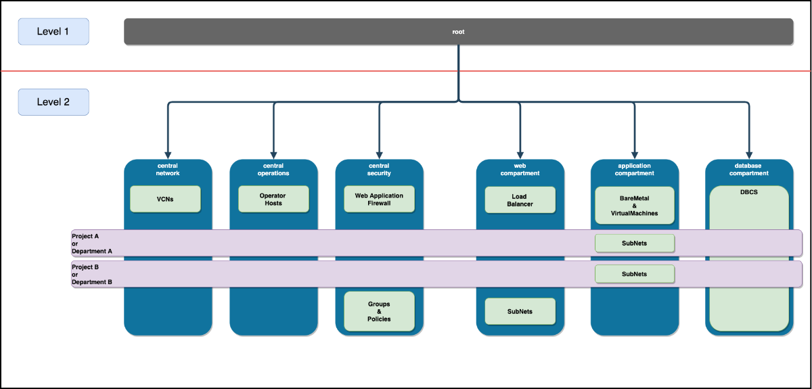
            </picture>

<p>Both setups are just examples and will require a discovery workshop with the customer to build the compartment structure based on his requirements.</p>

<p>The landing zone, as part of the base setup in step 2, is intended to provide an initial setup as blueprint for a classical 3-tier web-application where each layer is logically separated for each department with centralized management of IAM, network, and security.</p>

<h2 id="cloud-costs">Cloud Costs</h2>

<p>It’s key to have a clear view on cloud cost. <a href="https://www.youtube.com/watch?v=-RGzG3F9G_s&amp;list=PLKCk3OyNwIzuHYigVbdtDOZOfChcotfj2&amp;index=10">Foundations: OCI Pricing and Billing</a> and <a href="https://www.youtube.com/watch?v=uBIOGMqvMos&amp;list=PLKCk3OyNwIzvlfs9W4JtguJdg8aa9hLfO">Billing and Cost Management</a> allow you to improve control and visibility over your cloud budgets, usage, and spend.</p>

<p>This document gives you some guidance how to manage Cloud cost effectively. You will be alerted based on your own business rules and are able to individually break down all your cloud usage.</p>

<p>See Jenet (Cloud cost controller) in our 4 minutes <a href="https://www.youtube.com/watch?v=DsFl6jjaRrY">Introduction to Oracle Cloud Infrastructure Cost Management video</a> to get an initial idea of effective cloud cost management.</p>

<picture class="">
                <source srcset="assets/jenet.jpg 1x" />
                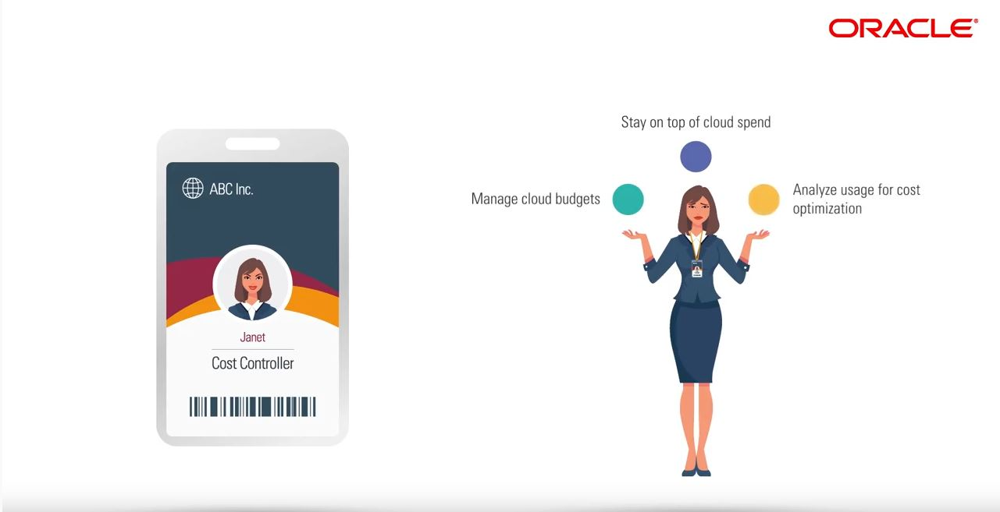
            </picture>

<p>In our example Jenet is responsible for Cost Management. This consists of:</p>

<ul>
  <li>Manage Cloud Budgets</li>
  <li>Stay on top of cloud spend</li>
  <li>Analyze usage for cost optimization</li>
</ul>

<p>To do so, Oracle provides Jenet Enterprise-grade Controls for Cost Management.</p>

<picture class="">
                <source srcset="assets/enterprise_grade_controls.jpg 1x" />
                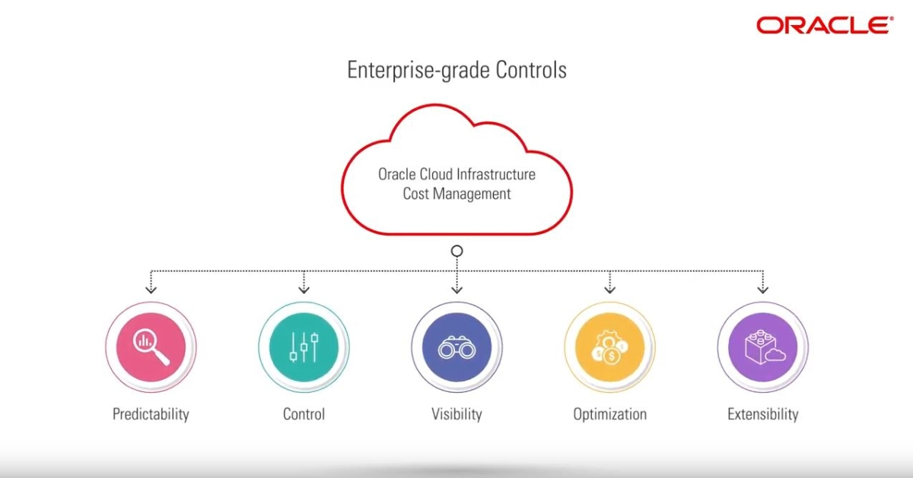
            </picture>

<p>OCI provides you a comprehensive set of tools out of the box to manage Cloud cost effectively.</p>

<h2 id="manage-cloud-cost-effectively-out-of-the-box">Manage Cloud cost effectively (out of the box)</h2>

<p><a href="https://docs.oracle.com/en-us/iaas/Content/Billing/Concepts/billingoverview.htm">Billing and Payment Tools Overview</a> Oracle Cloud Infrastructure provides various billing and payment tools that make it easy to manage your service costs.</p>

<h3 id="predictability-and-control">Predictability and Control</h3>

<picture class="">
                <source srcset="assets/predictability.jpg 1x" />
                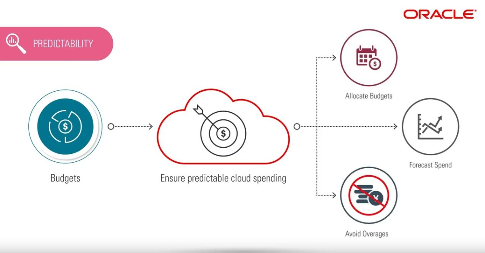
            </picture>
<picture class="">
                <source srcset="assets/predictability_1.jpg 1x" />
                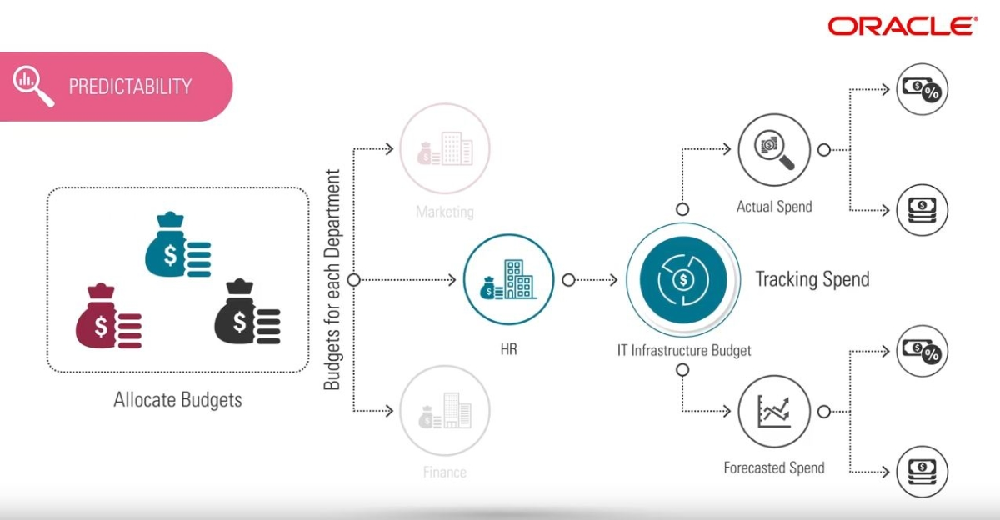
            </picture>

<p>Budgets are set on cost-tracking tags or on compartments (including the root compartment) to track all spending in that cost-tracking tag or for that compartment and its children. Budgets can be used to set thresholds for your Oracle Cloud Infrastructure spending. You can set alerts on your budget to let you know when you might exceed your budget, and you can view all of your budgets and spending from one single place in the Oracle Cloud Infrastructure console.</p>

<picture class="">
                <source srcset="assets/control.jpg 1x" />
                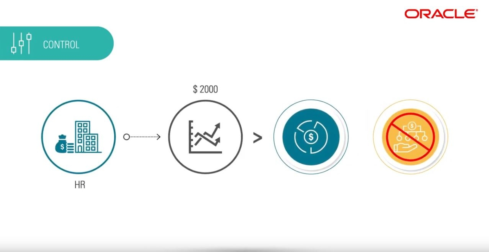
            </picture>
<picture class="">
                <source srcset="assets/control_1.jpg 1x" />
                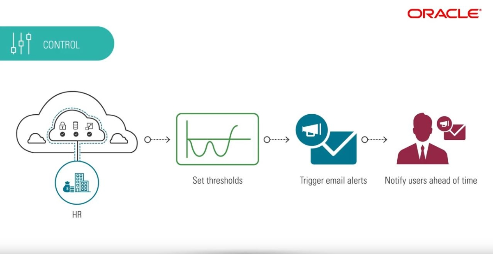
            </picture>

<p>See <a href="https://docs.oracle.com/en-us/iaas/Content/Billing/Concepts/budgetsoverview.htm#Budgets_Overview">Budgets Overview</a> for more information.</p>

<p>Budgets help you track your Oracle Cloud Infrastructure (OCI) spending. They monitor costs at a compartment level or cost-tracking tag level. You can set alerts on a budget to receive an email notification based on an actual or forecasted spending threshold. Budget alerts also integrate with the Events service. You can use this integration and the Oracle Notifications service to send messages through PagerDuty, Slack, or SMS.</p>

<p>You can also use the integration with Events service to trigger functions that create quotas resulting in budgets with hard limits.</p>

<picture class="">
                <source srcset="assets/3steps.png 1x" />
                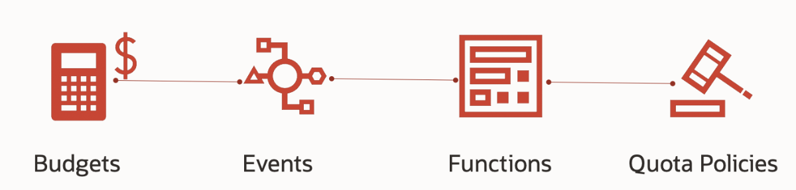
            </picture>

<ul>
  <li>Create a budget and alert</li>
  <li>Create a function</li>
  <li>Create a rule</li>
</ul>

<p>As a result, you can prevent the creation of new Compute resources in your tenancy. Anyone who tries to create resources after crossing the budget is unable to do so and sees a message notifying them that the compartment quota was exceeded.</p>

<p>Source: <a href="https://blogs.oracle.com/cloud-infrastructure/post/enforced-budgets-on-oci-using-functions-and-quotas">Enforced budgets on OCI using functions and quotas</a></p>

<h3 id="visibility">Visibility</h3>

<p><a href="https://docs.oracle.com/en-us/iaas/Content/Billing/Concepts/costanalysisoverview.htm">Cost Analysis Dashboard</a> provides easy-to-use visualization to help you track and optimize your Oracle Cloud Infrastructure spending by</p>
<ul>
  <li>Service (shown by default when the Cost Analysis page first opens)</li>
  <li>Service and Description</li>
  <li>Service and SKU (Part Number)</li>
  <li>Service and Tag (see <a href="https://www.youtube.com/watch?v=7l5vQtxJFFE">Oracle Cloud Infrastructure Tagging</a> for more details)</li>
  <li>Compartment (see <a href="https://www.ateam-oracle.com/oracle-cloud-infrastructure-compartments">Oracle Cloud Infrastructure Compartments</a> for more details)</li>
  <li>Monthly Costs</li>
</ul>

<p>To use Cost Analysis, the following policy statement is required:</p>

<div class="language-plaintext highlighter-rouge"><div class="highlight"><pre class="highlight"><code>Allow group &lt;group_name&gt; to read usage-report in tenancy
</code></pre></div></div>

<picture class="">
                <source srcset="assets/visibility.jpg 1x" />
                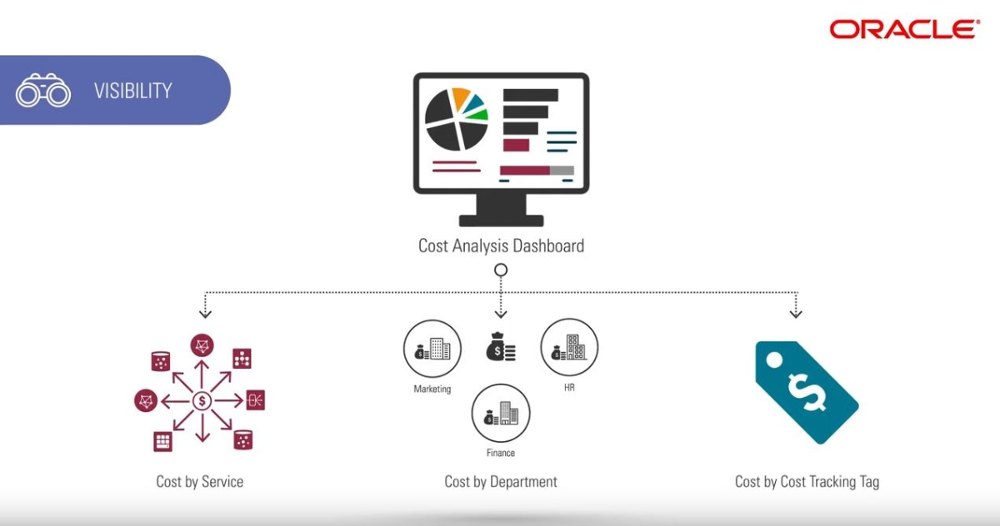
            </picture>
<picture class="">
                <source srcset="assets/visibility_1.jpg 1x" />
                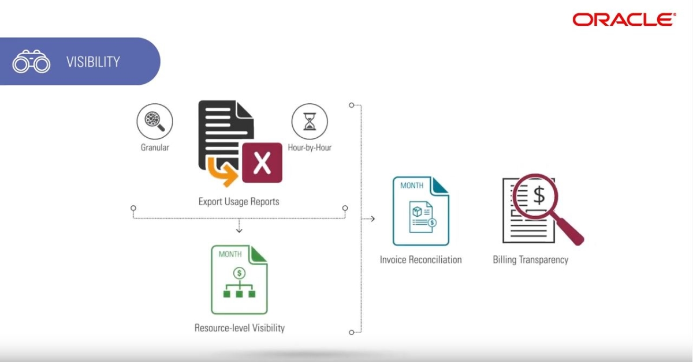
            </picture>

<p>A cost report is a comma-separated value (CSV) file that is similar to a usage report, but also includes cost columns. The report can be used to obtain a breakdown of your invoice line items at resource-level granularity. As a result, you can optimize your Oracle Cloud Infrastructure spending, and make more informed cloud spending decisions.</p>

<p>A usage report is a comma-separated value (CSV) file that can be used to get a detailed breakdown of resources in Oracle Cloud Infrastructure for audit or invoice reconciliation.</p>

<p>To use cost and usage reports, the following policy statement is required:</p>

<div class="language-plaintext highlighter-rouge"><div class="highlight"><pre class="highlight"><code>define tenancy usage-report as ocid1.tenancy.oc1..aaaaaaaaned4fkpkisbwjlr56u7cj63lf3wffbilvqknstgtvzub7vhqkggq
endorse group &lt;group&gt; to read objects in tenancy usage-report
</code></pre></div></div>

<p>For more information, see <a href="https://docs.oracle.com/en-us/iaas/Content/Billing/Concepts/usagereportsoverview.htm#Cost_and_Usage_Reports_Overview">Cost and Usage Reports Overview</a></p>

<h4 id="deutsche-standardkontenrahmen">Deutsche Standardkontenrahmen</h4>

<p>Ein Kontenrahmen ist ein Verzeichnis, das alle Kostenarten systematisch numerischen Konten für die Buchführung in einem Wirtschaftszweig zuordnet. Er dient als Richtlinie und Empfehlung für die Aufstellung eines konkreten Kontenplans in einem Unternehmen. Damit sollen einheitliche Buchungen von gleichen Geschäftsvorfällen erreicht und zwischenbetriebliche Vergleiche ermöglicht werden. (Quelle: <a href="https://de.wikipedia.org/wiki/Kontenrahmen">Wikipedia</a>)</p>

<ul>
  <li>SKR 03 (für publizitätspflichtige Firmen – Prozessgliederungsprinzip)</li>
  <li>SKR 04 (für publizitätspflichtige Firmen – Abschlussgliederungsprinzip, Kontenrahmen nach dem Bilanzrichtliniengesetz (BiRiliG) unter Berücksichtigung der Neuerungen des Bilanzrechtsmodernisierungsgesetz(BilMoG))</li>
</ul>

<p>Wir stellen hier für Sie eine Abbildung der Standardkontenrahmen SKR 03, SKR 04 als <a href="https://docs.oracle.com/en-us/iaas/Content/Tagging/Tasks/managingtagsandtagnamespaces.htm">“Defined Tags”</a> zur Verfügung. Diese Tags können Sie mit dem <a href="https://docs.oracle.com/en-us/iaas/Content/Billing/Concepts/costanalysisoverview.htm"><strong>Cost Analysis Dashboard</strong></a> auswerten.</p>

<p>Um die dafür notwendigen Namespaces zu <strong>verwalten</strong> benötigen Sie folgende Berechtigungen</p>

<div class="language-plaintext highlighter-rouge"><div class="highlight"><pre class="highlight"><code>Allow group GroupA to use tag-namespaces in tenancy
</code></pre></div></div>

<p>Um die dafür notwendigen Namespaces <strong>auszuwerten</strong> benötigen Sie folgende Berechtigungen</p>

<div class="language-plaintext highlighter-rouge"><div class="highlight"><pre class="highlight"><code>Allow group GroupA to read tag-namespaces in tenancy
</code></pre></div></div>

<p><strong>Standardkontenrahmen SKR 03</strong></p>

<p>z.B. <a href="https://www.datev.de/web/de/datev-shop/material/kontenrahmen-datev-skr-03/">DATEV-Kontenrahmen nach dem Bilanzrichtlinie-Umsetzungsgesetz Standardkontenrahmen - Prozessgliederungsprinzip (SKR 03)</a></p>

<p>Die hier beispielhaft implementierten Konten stammen aus der Quelle <a href="https://www.haufe.de/finance/haufe-finance-office-premium/software-anschaffung-und-abschreibung_idesk_PI20354_HI2997902.html">Software, Anschaffung und Abschreibung</a>.</p>

<p>Mapping Standardkontenrahmen zu Namespaces</p>

<table>
  <thead>
    <tr>
      <th>Namespace</th>
      <th>Key</th>
      <th>Value</th>
      <th>Resources</th>
    </tr>
  </thead>
  <tbody>
    <tr>
      <td>SKR03</td>
      <td>0</td>
      <td>Anlage- und Kapitalkonten</td>
      <td> </td>
    </tr>
    <tr>
      <td>SKR03</td>
      <td>0027</td>
      <td>EDV-Software</td>
      <td>Entgeltlich erworbene Konzessionen, gewerbliche Schutzrechte und ähnliche Rechte und Werte sowie Lizenzen an solchen Rechten und Werten</td>
    </tr>
    <tr>
      <td>SKR03</td>
      <td>0044</td>
      <td>EDV-Software</td>
      <td>Selbst geschaffene immaterielle Vermögensgegenstände</td>
    </tr>
    <tr>
      <td>SKR03</td>
      <td>1</td>
      <td>Finanz- und Privatkonten</td>
      <td> </td>
    </tr>
    <tr>
      <td>SKR03</td>
      <td>2</td>
      <td>Abgrenzungskonten</td>
      <td> </td>
    </tr>
    <tr>
      <td>SKR03</td>
      <td>3</td>
      <td>Wareneingangs- und Bestandkonten</td>
      <td> </td>
    </tr>
    <tr>
      <td>SKR03</td>
      <td>4</td>
      <td>Betriebliche Aufwendungen</td>
      <td> </td>
    </tr>
    <tr>
      <td>SKR03</td>
      <td>4806</td>
      <td>Wartungskosten für Hard- und Software</td>
      <td>Sonstige betriebliche Aufwendungen</td>
    </tr>
    <tr>
      <td>SKR03</td>
      <td>4822</td>
      <td>Abschreibungen auf immaterielle Vermögensgegenstände</td>
      <td>Abschreibungen auf immaterielle Vermögensgegenstände des Anlagevermögens und Sachanlagen</td>
    </tr>
    <tr>
      <td>SKR03</td>
      <td>4964</td>
      <td>Aufwendungen für die zeitlich befristete Überlassung von Rechten (Lizenzen, Konzessionen)</td>
      <td>Sonstige betriebliche Aufwendungen</td>
    </tr>
    <tr>
      <td>SKR03</td>
      <td>7</td>
      <td>Bestände an Erzeugnissen</td>
      <td> </td>
    </tr>
    <tr>
      <td>SKR03</td>
      <td>8</td>
      <td>Erlöskonten</td>
      <td> </td>
    </tr>
    <tr>
      <td>SKR03</td>
      <td>8995</td>
      <td>Aktivierte Eigenleistungen zur Erstellung von selbst geschaffenen immateriellen Vermögensgegenständen</td>
      <td>Andere aktivierte Eigenleistungen</td>
    </tr>
    <tr>
      <td>SKR03</td>
      <td>9</td>
      <td>Vortrags- und statistische Konten</td>
      <td> </td>
    </tr>
  </tbody>
</table>

<p>Implementierungsbeispiel:</p>

<div class="language-plaintext highlighter-rouge"><div class="highlight"><pre class="highlight"><code>resource "oci_identity_tag_namespace" "skr03_tag_namespace" {
# Required
#------------------------------------------------------------
compartment_id = var.compartment_id
description    = "Standardkontenrahmen - Prozessgliederungsprinzip"
name           = "SKR03"

# Optional
#------------------------------------------------------------
defined_tags = {"SKR03.0"    = "Anlage- und Kapitalkonten"                                                                             }
defined_tags = {"SKR03.0027" = "EDV-Software (Entgeltlich erworbene Konzessionen, gewerbliche Schutzrechte und ähnliche Rechte ...)"   }
defined_tags = {"SKR03.0044" = "EDV-Software (Selbst geschaffene immaterielle Vermögensgegenstände) "                                  }
defined_tags = {"SKR03.1"    = "Finanz- und Privatkonten"                                                                              }
defined_tags = {"SKR03.2"    = "Abgrenzungskonten"                                                                                     }
defined_tags = {"SKR03.3"    = "Wareneingangs- und Bestandkonten"                                                                      }
defined_tags = {"SKR03.4"    = "Betriebliche Aufwendungen"                                                                             }
defined_tags = {"SKR03.4806" = "Wartungskosten für Hard- und Software"                                                                 }
defined_tags = {"SKR03.4822" = "Abschreibungen auf immaterielle Vermögensgegenstände"                                                  }
defined_tags = {"SKR03.4964" = "Aufwendungen für die zeitlich befristete Überlassung von Rechten (Lizenzen, Konzessionen)"             }
defined_tags = {"SKR03.7"    = "Bestände an Erzeugnissen"                                                                              }
defined_tags = {"SKR03.8"    = "Erlöskonten"                                                                                           }
defined_tags = {"SKR03.8995" = "Aktivierte Eigenleistungen zur Erstellung von selbst geschaffenen immateriellen Vermögensgegenständen" }
defined_tags = {"SKR03.9"    = "Vortrags- und statistische Konten"                                                                     }
is_retired   = false
}
</code></pre></div></div>

<p><strong>Standardkontenrahmen SKR 04</strong></p>

<p>z.B. <a href="https://www.datev.de/web/de/datev-shop/material/kontenrahmen-datev-skr-04/">DATEV-Kontenrahmen nach dem Bilanzrichtlinie-Umsetzungsgesetz Standardkontenrahmen - Abschlussgliederungsprinzip (SKR 04)</a></p>

<p>Die hier beispielhaft implementierten Konten stammen aus der Quelle <a href="https://www.haufe.de/finance/haufe-finance-office-premium/software-anschaffung-und-abschreibung_idesk_PI20354_HI2997902.html">Software, Anschaffung und Abschreibung</a>.</p>

<p>Mapping Standardkontenrahmen zu Namespaces</p>

<table>
  <thead>
    <tr>
      <th>Namespace</th>
      <th>Key</th>
      <th>Value</th>
      <th>Resources</th>
    </tr>
  </thead>
  <tbody>
    <tr>
      <td>SKR04</td>
      <td>0</td>
      <td>Anlagevermögen (Bestand: Aktiv)</td>
      <td> </td>
    </tr>
    <tr>
      <td>SKR04</td>
      <td>0135</td>
      <td>EDV-Software</td>
      <td>Entgeltlich erworbene Konzessionen, gewerbliche Schutzrechte und ähnliche Rechte und Werte sowie Lizenzen an solchen Rechten und Werten</td>
    </tr>
    <tr>
      <td>SKR04</td>
      <td>0144</td>
      <td>EDV-Software</td>
      <td>Selbst geschaffene immaterielle Vermögensgegenstände</td>
    </tr>
    <tr>
      <td>SKR04</td>
      <td>1</td>
      <td>Umlaufvermögen (Bestand: Aktiv)</td>
      <td> </td>
    </tr>
    <tr>
      <td>SKR04</td>
      <td>2</td>
      <td>Eigenkapitalkonten (Bestand: Passiv)</td>
      <td> </td>
    </tr>
    <tr>
      <td>SKR04</td>
      <td>3</td>
      <td>Fremdkapitalkonten (Bestand: Passiv)</td>
      <td> </td>
    </tr>
    <tr>
      <td>SKR04</td>
      <td>4</td>
      <td>Betriebliche Erträge (Erfolg: Ertrag)</td>
      <td> </td>
    </tr>
    <tr>
      <td>SKR04</td>
      <td>4825</td>
      <td>Aktivierte Eigenleistungen zur Erstellung von selbst geschaffenen immateriellen Vermögensgegenständen</td>
      <td>Andere aktivierte Eigenleistungen</td>
    </tr>
    <tr>
      <td>SKR04</td>
      <td>5</td>
      <td>Betriebliche Aufwendungen (Erfolg: Aufwand)</td>
      <td> </td>
    </tr>
    <tr>
      <td>SKR04</td>
      <td>6</td>
      <td>Betriebliche Aufwendungen (Erfolg: Aufwand)</td>
      <td> </td>
    </tr>
    <tr>
      <td>SKR04</td>
      <td>6200</td>
      <td>Abschreibungen auf immaterielle Vermögensgegenstände</td>
      <td>Abschreibungen auf immaterielle Vermögensgegenstände des Anlagevermögens und Sachanlagen</td>
    </tr>
    <tr>
      <td>SKR04</td>
      <td>6495</td>
      <td>Wartungskosten für Hard- und Software</td>
      <td>Sonstige betriebliche Aufwendungen</td>
    </tr>
    <tr>
      <td>SKR04</td>
      <td>6835</td>
      <td>Mieten für Einrichtungen (bewegliche Wirtschaftsgüter)</td>
      <td>Cloud Ressourcen wie z.B. Compartment, Group, Policy, User, Network, Storage, Compute können hier verbucht werden.</td>
    </tr>
    <tr>
      <td>SKR04</td>
      <td>6837</td>
      <td>Aufwendungen für die zeitlich befristete Überlassung von Rechten (Lizenzen, Konzessionen)</td>
      <td>Sonstige betriebliche Aufwendungen</td>
    </tr>
    <tr>
      <td>SKR04</td>
      <td>7</td>
      <td>Weitere Erträge und Aufwendungen (Erfolg: Aufwand, Ertrag)</td>
      <td> </td>
    </tr>
    <tr>
      <td>SKR04</td>
      <td>9</td>
      <td>Vortrags- und statistische Konten (Bestand: Rechnungsabgrenzung usw.)</td>
      <td> </td>
    </tr>
  </tbody>
</table>

<p>Implementierungsbeispiel:</p>

<div class="language-plaintext highlighter-rouge"><div class="highlight"><pre class="highlight"><code>resource "oci_identity_tag_namespace" "skr04_tag_namespace" {
# Required
#------------------------------------------------------------
compartment_id = var.compartment_id
description    = "Standardkontenrahmen - Abschlussgliederungsprinzip"
name           = "SKR04"

# Optional
#------------------------------------------------------------
defined_tags = {"SKR04.0"    = "Anlagevermögen (Bestand: Aktiv)"                                                                       }
defined_tags = {"SKR04.1"    = "Umlaufvermögen (Bestand: Aktiv)"                                                                       }
defined_tags = {"SKR04.0135" = "EDV-Software (Entgeltlich erworbene Konzessionen, gewerbliche Schutzrechte und ähnliche Rechte ...)"   }
defined_tags = {"SKR04.0144" = "EDV-Software (Selbst geschaffene immaterielle Vermögensgegenstände) "                                  }
defined_tags = {"SKR04.2"    = "Eigenkapitalkonten (Bestand: Passiv)"                                                                  }
defined_tags = {"SKR04.3"    = "Fremdkapitalkonten (Bestand: Passiv)"                                                                  }
defined_tags = {"SKR04.4"    = "Betriebliche Erträge (Erfolg: Ertrag)"                                                                 }
defined_tags = {"SKR04.4825" = "Aktivierte Eigenleistungen zur Erstellung von selbst geschaffenen immateriellen Vermögensgegenständen" }
defined_tags = {"SKR04.5"    = "Betriebliche Aufwendungen (Erfolg: Aufwand)"                                                           }
defined_tags = {"SKR04.6"    = "Betriebliche Aufwendungen (Erfolg: Aufwand)"                                                           }
defined_tags = {"SKR04.6200" = "Abschreibungen auf immaterielle Vermögensgegenstände"                                                  }
defined_tags = {"SKR04.6495" = "Wartungskosten für Hard- und Software"                                                                 }
defined_tags = {"SKR04.6837" = "Aufwendungen für die zeitlich befristete Überlassung von Rechten (Lizenzen, Konzessionen)"             }
defined_tags = {"SKR04.7"    = "Weitere Erträge und Aufwendungen (Erfolg: Aufwand, Ertrag)"                                            }
defined_tags = {"SKR04.9"    = "Vortrags- und statistische Konten (Bestand: Rechnungsabgrenzung usw.)"                                 }
is_retired   = false
}
</code></pre></div></div>

<h3 id="unified-billing">Unified Billing</h3>

<p>This topic describes how you can unify billing across multiple tenancies by sharing your subscription. You should consider sharing your subscription if you want to have multiple tenancies to isolate your cloud workloads, but you want to have a single Universal Credits commitment. For example, you have a subscription with a $150,000 commitment, but you want to have three tenancies, because the credits are going to be used by three distinct groups that require strictly isolated environments.</p>

<p>Two types of tenancies are involved when sharing a subscription in the Console:</p>

<ul>
  <li>The parent tenancy (the one that is associated with the primary funded subscription).</li>
  <li>Child tenancies (those that are consuming from a subscription that is not their own).</li>
</ul>

<p>Notable benefits of sharing a subscription includes:</p>

<ul>
  <li>Sharing a single commitment helps to avoid cost overages and allows you to consolidate your billing.</li>
  <li>Enabling multi-tenancy cost management. You can analyze, report, and monitor across all linked tenancies. The parent tenancy has the ability to analyze and report across each of your tenancies through Cost Analysis and Cost and usage reports, and you can receive alerts through Budgets.</li>
  <li>Isolation of data. Customers with strict data isolation requirements can use a multi-tenancy strategy to continue restricting resources across their tenancies.</li>
</ul>

<p>The remainder of this topic provides an overview of how to share your subscription between tenancies, and provides best practices on how to isolate workloads, in order to help you determine if you should use a single-tenancy or multi-tenancy strategy. You can unify billing across multiple tenancies by sharing your subscription between tenancies.</p>

<p>To use subscription sharing, the following policy statements are required:</p>

<div class="language-plaintext highlighter-rouge"><div class="highlight"><pre class="highlight"><code>Allow group linkUsers to use organizations-family in tenancy
Allow group linkAdmins to manage organizations-family in tenancy
</code></pre></div></div>

<p>For more information, see <a href="https://docs.oracle.com/en-us/iaas/Content/Billing/Concepts/unified_billing_overview.htm#unified_billing_overview">Unified Billing Overview</a>.</p>

<h3 id="invoices">Invoices</h3>

<p>You can view and download invoices for your Oracle Cloud Infrastructure usage.</p>

<p>Oracle Order-to-Cash has launched a dedicated page <a href="https://www.oracle.com/corporate/invoicing/">Customer Billing Support</a> to support our customers in understanding the Oracle Cloud invoicing experience. When visiting <a href="https://www.oracle.com/corporate/invoicing/">Customer Billing Support</a>, customers can access content targeting specific needs and easily submit billing inquiries. The web page content is as follows:</p>

<ul>
  <li>Billing Support: Email or call Oracle’s global Collections offices.</li>
  <li>Videos: Brief animations detailing various aspects of the invoice process.
    <ul>
      <li>Billing Basics: This journey through Oracle Cloud billing basics covers the events that trigger the invoicing process and when to expect a bill.</li>
      <li>Subscription Invoicing: A guide to billing for Oracle metered and non-metered subscriptions.</li>
      <li>Overage and Bursting: This video explains how to avoid unexpected charges for Oracle Cloud services.</li>
      <li>Dispute Process: In this guide through the Oracle dispute process, customers learn who to contact and how to resolve billing questions.</li>
    </ul>
  </li>
  <li>FAQ: Consult our frequently asked questions regarding Cloud invoicing.</li>
  <li>Glossary: Basic terminology used for Cloud features and services.</li>
</ul>

<p>For questions or any additional information, please contact <a href="mailto:cloud_invoicing_us@oracle.com">cloud_invoicing_us@oracle.com</a> or see <a href="https://docs.oracle.com/en/cloud/get-started/subscriptions-cloud/mmocs/viewing-your-subscription-invoice.html">Viewing Your Subscription Invoice</a>.</p>

<h3 id="payment-methods">Payment Methods</h3>

<p>The Payment Method section of the Oracle Cloud Infrastructure Console allows you to easily manage how you pay for your Oracle Cloud Infrastructure usage. For more information, see <a href="https://docs.oracle.com/en-us/iaas/Content/GSG/Tasks/changingpaymentmethod.htm#Changing_Your_Payment_Method">Changing Your Payment Method</a>.</p>

<h2 id="manage-cloud-cost-effectively-more-advanced">Manage Cloud cost effectively (more advanced)</h2>

<h3 id="optimization">Optimization</h3>

<picture class="">
                <source srcset="assets/optimization.jpg 1x" />
                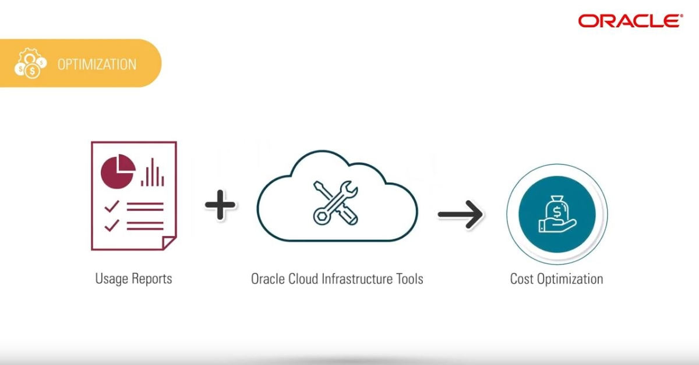
            </picture>
<picture class="">
                <source srcset="assets/optimization_1.jpg 1x" />
                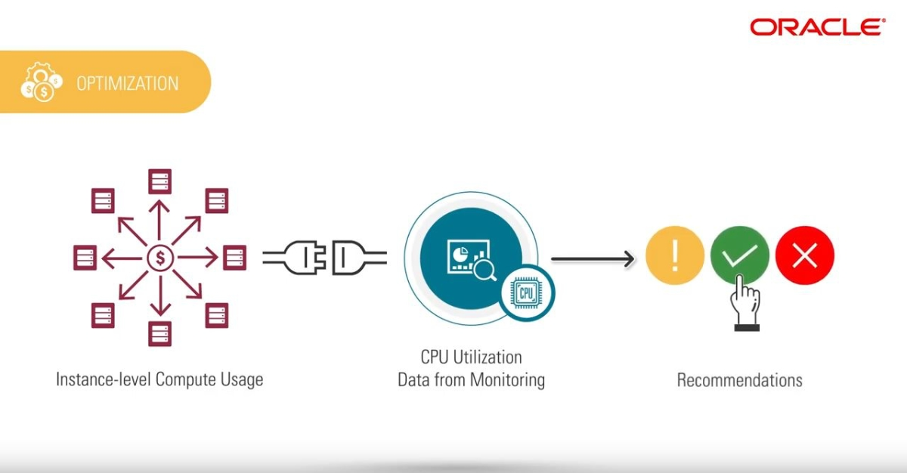
            </picture>

<p>If you’re using any cloud, you might regularly ask yourself questions like, “Why is the bill so high this month?” or “What would it actually cost to move this application to the cloud?” If so, this blog is for you. Today, I aim to make you familiar with the practices you need to control and predict your cost without compromising your performance.</p>

<p>Whether you’re part of the finance department in charge of controlling the budget, a business decision-maker evaluating a new project, or a DevOps engineer thinking of new functionality for your application, cloud cost management is mission-critical and can make or break your business. Accessing limitless possibilities is leading to cloud exuberance, and it’s time to tame the beast.</p>

<ul>
  <li>Tag everything from day 1</li>
  <li>Sharing is not caring</li>
  <li>Time is money</li>
  <li>Choose performance responsibly</li>
  <li>Focus your attention on the whales</li>
  <li>Consolidate your databases</li>
  <li>Listen to your advisor</li>
  <li>Involve your stakeholders and automate</li>
  <li>Adopt cloud native technologies and containers</li>
  <li>Compare prices and total cost of ownership</li>
</ul>

<p>You find more details to do this in <a href="https://blogs.oracle.com/cloud-infrastructure/post/10-effective-ways-to-save-cost-in-the-cloud-part-1">10 effective ways to save cost in the cloud</a>.</p>

<h3 id="extensibility">Extensibility</h3>

<picture class="">
                <source srcset="assets/extensibility.jpg 1x" />
                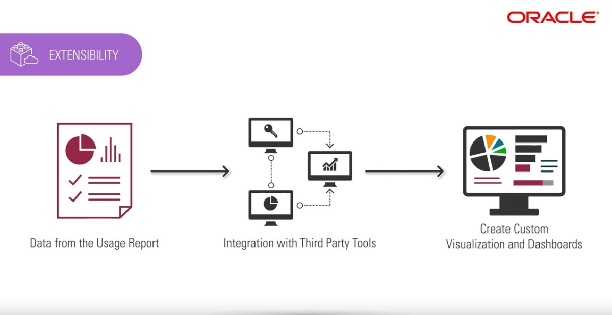
            </picture>

<p><a href="https://github.com/oracle/oci-python-sdk/tree/master/examples/usage_reports_to_adw">Oracle Cloud Infrastructure Usage and Cost Reports to Autonomous Database Tool usage2adw</a></p>

<p>usage2adw is a tool which uses the Python SDK to extract the usage and cost reports from your tenant and load it to Oracle Autonomous Database. (DbaaS can be used as well) Authentication to OCI by User or instance principals.</p>

<p>It uses APEX for Visualization and generates Daily e-mail report.</p>

<p>Main Features</p>
<ul>
  <li>Usage Current State</li>
  <li>Usage Over Time</li>
  <li>Cost Analysis</li>
  <li>Cost Over Time</li>
  <li>Rate Card for Used Products</li>
</ul>

<picture class="">
                <source srcset="assets/ociapex_screen_4.png 1x" />
                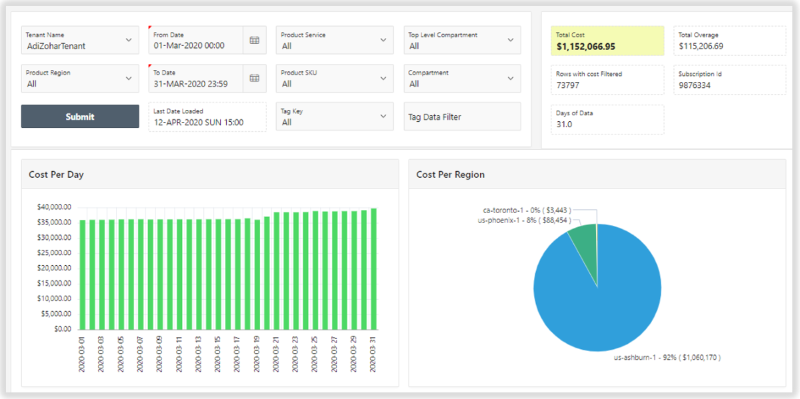
            </picture>

<p><a href="https://github.com/oracle/oci-python-sdk/raw/master/examples/usage_reports_to_adw/img/screen_4.png">from GitHub</a></p>

<h3 id="modern-cloud-economics">Modern Cloud Economics</h3>

<p><a href="https://www.oracle.com/a/ocom/docs/cloud/modern-cloud-economics-by-oracle-insight.pdf">Unlocking business value of cloud for enterprise workloads</a>. A C-Suite’s guide to build and execute the Enterprise Cloud Strategy that delivers cloud’s full business value potential.</p>

<p>Commercial principles enable enterprises to continuously leverage the optimal commercial frameworks of cloud service  provider, based on the changing usage profiles and deployment requirements, thereby de-risking unexpected cost overruns as well as maximizing the combined financial productivity of on-premise licenses, annual license support, and cloud subscription. The principles are the following:</p>

<ul>
  <li>Delink  data  and  network  linear  usage  from  cost</li>
  <li>Avoid service deployment lock-in</li>
  <li>Re-purpose on-premise spend to acquire future cloud capabilities</li>
</ul>

<picture class="">
                <source srcset="assets/economics.jpg 1x" />
                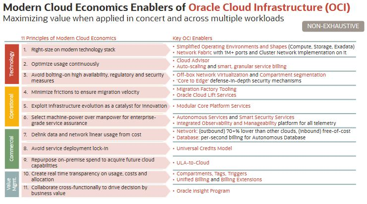
            </picture>

<p><strong>OCI enablers for Commercial principles</strong></p>

<p>OCI offers a range of commercial enablers to optimize rate, de-risk cost overruns and maximize financial productivity across the investments in Oracle on-premise licenses and cloud subscriptions. The key enablers are:</p>

<ul>
  <li>Best price performance guarantee</li>
  <li>Avoid service deployment lock-in</li>
  <li>Re-purpose on-premise spend to acquire future cloud capabilities</li>
</ul>

<!--- Links -->

<!-- /Links -->


          <div class="sidebar sticky">
    <!-- <p><strong>Tags:</strong> <span class="tags">

            
            <a class="animated-link tag" href="/topics/open-source">open-source</a>
            <a class="animated-link tag" href="/topics/terraform">terraform</a>
            <a class="animated-link tag" href="/topics/iac">iac</a>
            <a class="animated-link tag" href="/topics/devops">devops</a>
            <a class="animated-link tag" href="/topics/get-started">get-started</a>
            </span>
    </p> -->
  


<div itemscope itemtype="https://schema.org/Person">

  

  <div class="author__content">
    
      <h3 class="author__name" itemprop="name">Malte Menkhoff</h3>
    
    
      <div class="author__bio" itemprop="description">
        <p>Malte is a passioned solution architect and is supporting customers in the DACH region in migrating to OCI.</p>

      </div>
    
  </div>

  <div class="author__urls-wrapper">
    <ul class="author__urls social-icons">
      

      

      

      
        <li>
          <a href="mailto:malte.menkhoff@oracle.com">
            <meta itemprop="email" content="malte.menkhoff@oracle.com" />
            <i class="fas fa-fw fa-envelope-square" aria-hidden="true"></i><span class="label">Email</span>
          </a>
        </li>
      

      

      

      

      

      

      

      

      

      
        <li>
          <a href="https://github.com/kubemen" itemprop="sameAs" rel="nofollow noopener noreferrer">
            <i class="fab fa-fw fa-github" aria-hidden="true"></i><span class="label">GitHub</span>
          </a>
        </li>
      

      

      

      

      

      

      

      

      

      

      

      

      

      

      
    </ul>
  </div>
</div>

  
  
  

  </div>


      </section>

      <footer class="page__meta">
        
        


        

  <p class="page__date"><strong><i class="fas fa-fw fa-calendar-alt" aria-hidden="true"></i> Updated:</strong> <time datetime="2021-12-09T20:00:00+00:00">December 9, 2021</time></p>


      </footer>
    </div>

  </article>
</div>

</div>

